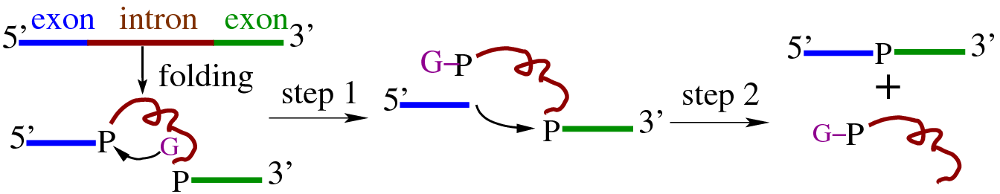

RNA Folding
RNA has been continuously surprising us with
discoveries of new functionalities, Besides its traditional role
of messengers and transporters. The finding of catalytic RNAs even
promotes the hypotheis of a premodial RNA world, as RNA can do the
jobs of DNA and protein: carrying genetic information and
catalyzing biological processes. The recent discovery of RNA
interference and riboswitch indicates again that RNA is an indeed
complicated and fanscinating molecule.
The structure and dynamics of RNA is thus of
essential importance. While copious information on the functional
mechanisms can be obtained with crystallographic studies, the
dynamic nature of biological processes necessitates the
understanding of the kinetics. This demands indepth knowledge of
the underlying physical forces governing the structure and
energetics. Macromolecular conformational changes present such
opportunity and challenge.
 |
| Self-splicing
RNA |